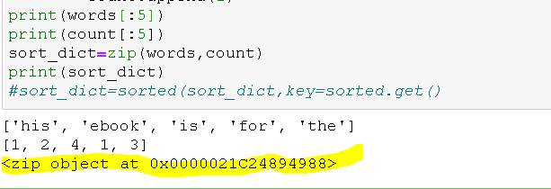

הי,
יש לי 2 רשימות - אחת של המילים בטקסט והשנייה של מספר המופעים.
ניסיתי לחבר בין הרשימות באמצעות ZIP ואני לא מצליח לקבל רשימה מאוחדת אלא תקלה.
<zip object at 0x0000021C24894988>
שאלה נוספת - האם ניתן למיין מילונים לפי VALUES? זה היה הרעיון הראשוני שלי למיון וכרגע ירדתי ממנו
תודה

orpazf
א. נראה לי שזו לא תקלה, על-מנת לגשת לרשימה המאוחדת יש צורך להפוך את הזיפ לאחת כזו, ע"י המרת האובייקט ל-list
ב. כן, אבל זה משהו שדורש קצת מחשבה איך לבצע אותו
לייק 1
oren_yosef
@orpazf
בסוף הקורס אני קונה לך מתנה
תודה!
5 לייקים
Yam
כולנו. מגבית משותפת מעכשיו
5 לייקים
devorack
אוקיי, כיוון שהנושא עלה שוב בדיון הזה, אם הבנתי נכון, לא אמורים ל sort מילון. מילונים הם באופן עקרוני מבנה לא סדור. ולכן, באחד התרגילים שיצרתי מילון, הפכתי אותו לרשימה לפני שמיינתי (או משהו כזה).
איזה פידבק בנושא?
Yam
הפונקציה sorted מחזירה רשימה “לבד”, לא משנה איזה מבנה נותנים לה
לייק 1
eliory09
בנוגע למיון מילונים לפי הערכים שלהם (מרשה לעצמי לאחר שכבר הגשנו את התרגילים) -
ניתן למיין את המפתחות ואת הערכים באמצעות sorted.
וכן, ניתן גם למיין את המפתחות לפי הערכים!
ניתן לייצר רשימה ממויינת של מפתחות עפ"י הערכים שלהם באמצעות הפונקציה sorted, כאשר key=dict.get(dict_key).
ניתן לייצר רשימה של values ע"י dict.values() ואז למיין גם אותם באמצעות sorted.
ניתן לאחד את הרשימות הממויינות למילון מחדש באמצעות dict(zip(list1, list2).
devorack
כן, זה יותר מה שהתכוונתי, בעיקרון המילון לא אמרו לשמש לידיעת הסדר של האיברים, אז לא השתמשתי בו ככזה.
לדעתי אחרי שסיימתי ליצור את המילון מיינתי את המפתחות לפי הערכים שלהם לרשימה וכך פתרתי, אם אני לא טועה הדפסתי מהרשימה, כשבשביל לקבל את הערך פניתי למילון עבור הערך של המפתח.